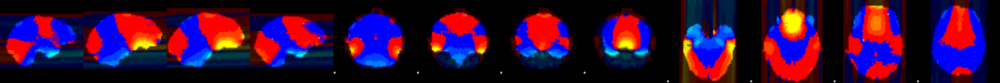
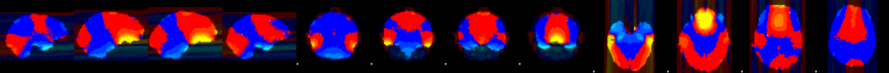
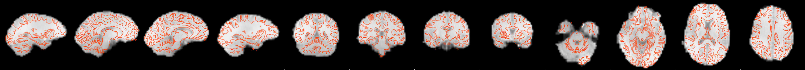

{kind=link}
{kind=link}
 0 6.444298
0 6.444298
Analysis methods
FMRI data processing was carried out using FEAT (FMRI Expert Analysis Tool) Version (version), part of FSL (FMRIB's Software Library, www.fmrib.ox.ac.uk/fsl).
References
[Jenkinson 2003] M. Jenkinson. A fast, automated, n-dimensional phase unwrapping algorithm. Magnetic Resonance in Medicine 49(1):193-197 2003.
[Jenkinson 2004] M. Jenkinson. Improving the registration of B0-disorted EPI images using calculated cost function weights. Tenth Int. Conf. on Functional Mapping of the Human Brain 2004.
Brain-masked B0 fieldmap in colour, overlaid on top of fieldmap magnitude image
Thresholded signal loss weighting image
Unwarping shift map, in voxels -4.368627 0 6.444298

White matter edges, overlaid on top of fieldmap image

Registration of fieldmap to highres
Registration of example_func to highres without fieldmap correction
Registration of example_func to highres with fieldmap correction
Movie of undistorted and distorted ( marked with a red dot ) example_func images
{kind=link}
{kind=link}
{kind=link}
{kind=link}
{kind=link}
{kind=link}